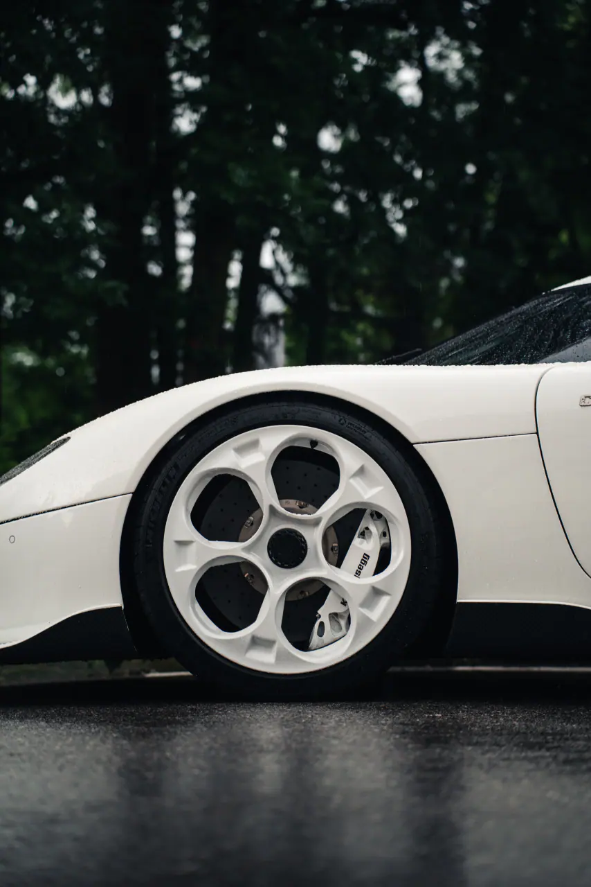
Jak przygotować auto do sesji zdjęciowej — 7 prostych kroków
Co zrobić przed sesją, żeby zdjęcia Twojego auta wyglądały jak z katalogu — poradnik dla klientów z Podkarpacia i całej Polski.
Czytaj dalej →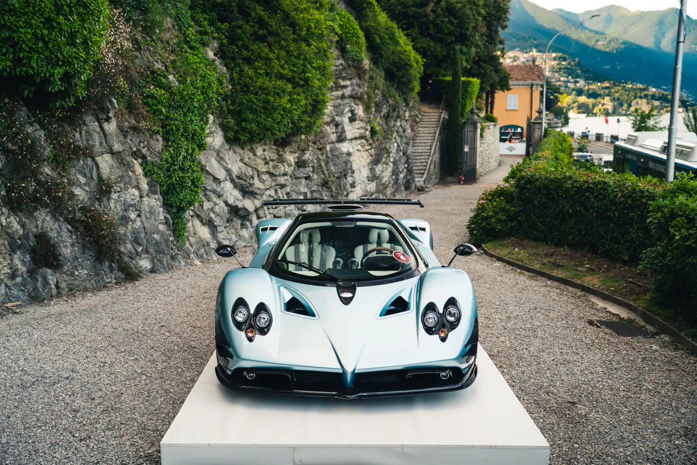
Fotograf samochodowy z Podkarpacia — od hypercarów i klasyków po dopracowane projekty tuningowe. Sesje w całej Polsce i relacje z eventów w Europie.
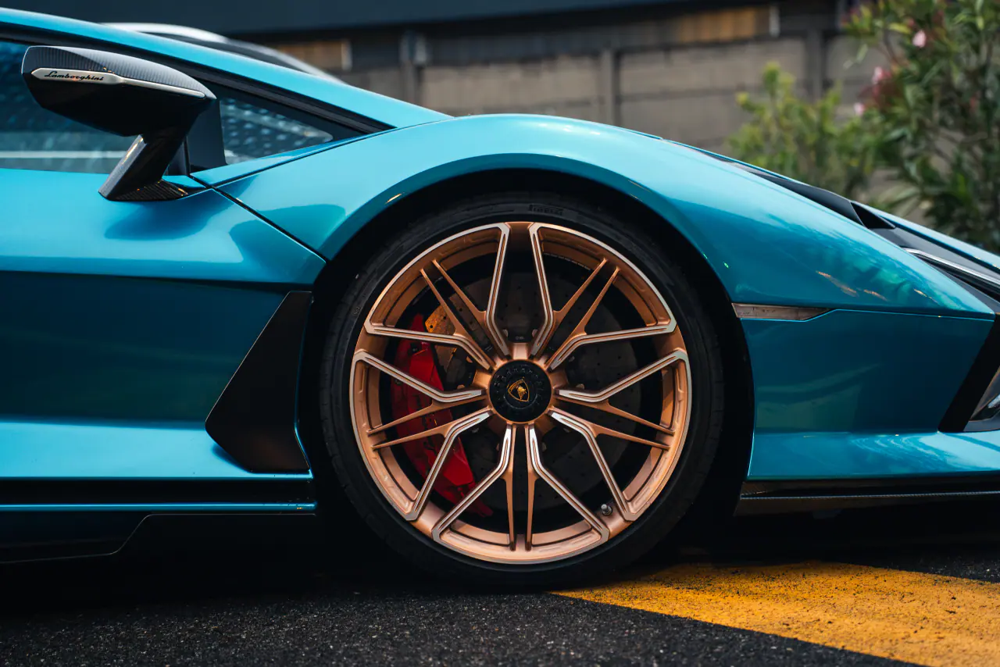
Jezioro Como, Włochy · 15–17 maja 2026
Como — dzień 0: alpejski dojazd · Koenigsegg CC850 · Kimera EVO38 · Lamborghini Sián · Pagani Zonda Cervino
Zobacz cały wyjazd →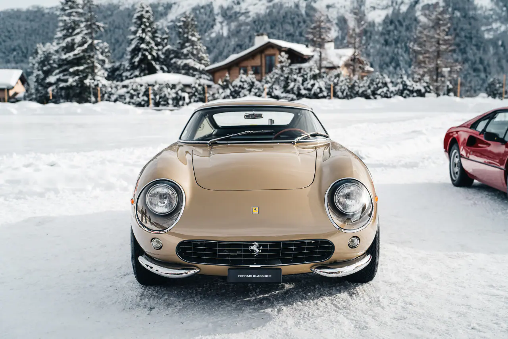
St. Moritz, Szwajcaria · 29 stycznia – 1 lutego 2026
The ICE — dzień 0: St. Moritz · The ICE — na lodzie · The ICE — padok, ludzie i atmosfera · McLaren F1 GTR · Bugatti Bolide · Koenigsegg na śniegu · Pagani Huayra Epitome
Zobacz cały wyjazd →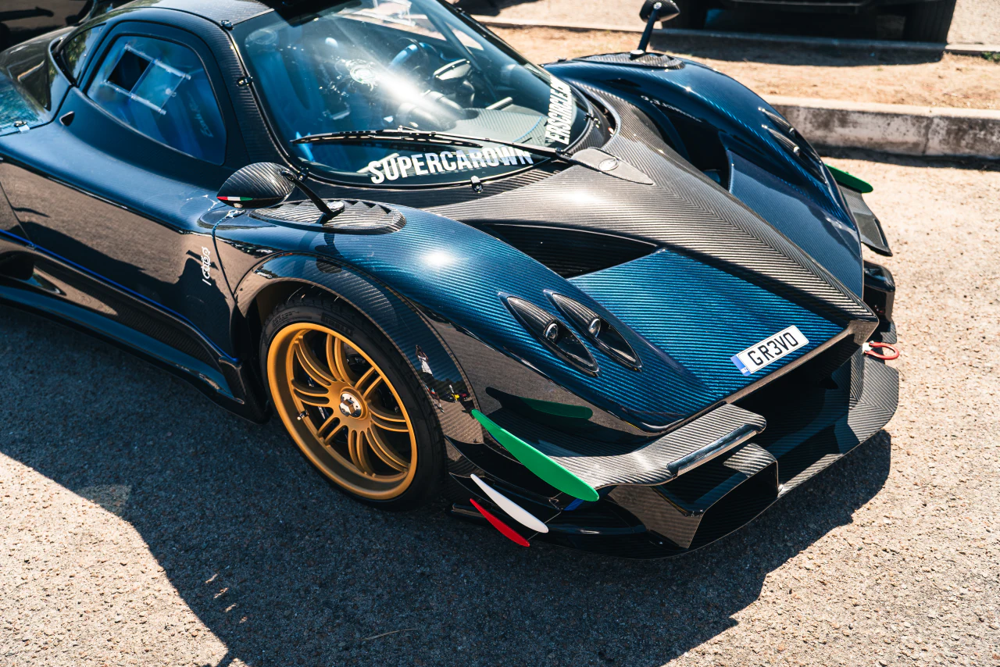
Costa Smeralda, Sardynia · 10–14 września 2025
SOC 2025 — przyjazd aut i Porto Cervo · Koenigsegg Jesko Attack Nur Revenge · Koenigsegg Jesko Absolut · SOC 2025 — na torze · Pagani Zonda S · Pagani Zonda Revolución · Aston Martin Valiant
Zobacz cały wyjazd →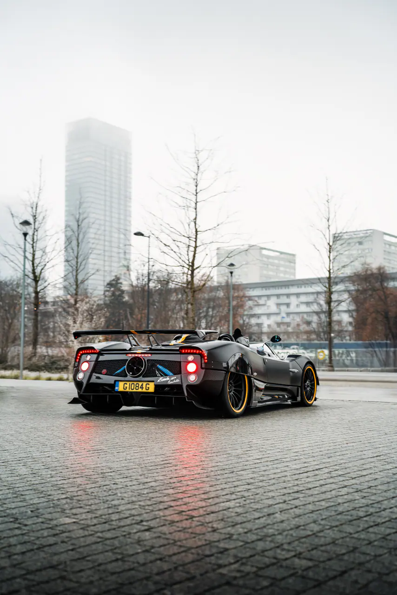
Warszawa · 49 zdjęć
Otwórz album →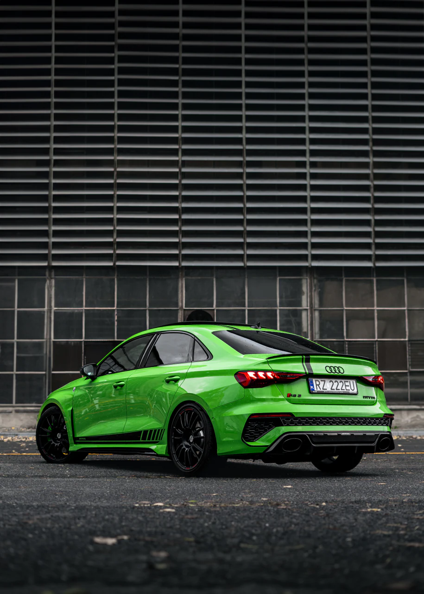
Rzeszów · 47 zdjęć
Otwórz album →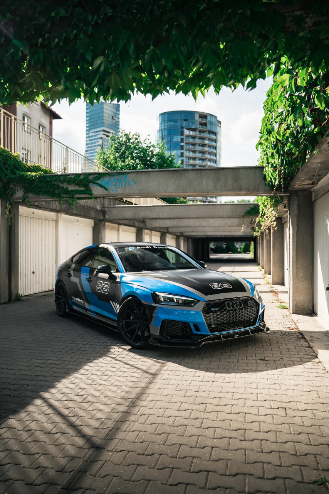
Rzeszów · 46 zdjęć
Otwórz album →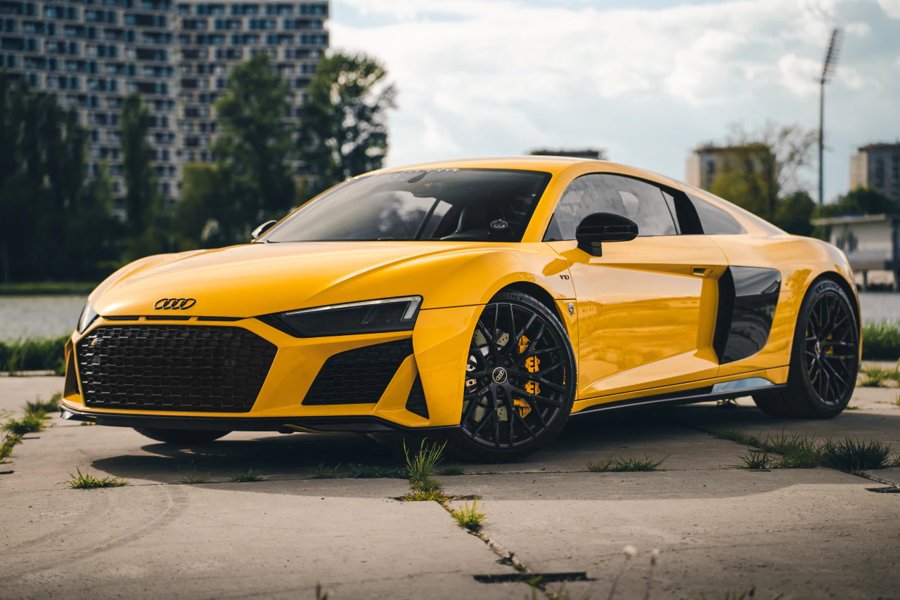
Rzeszów · 38 zdjęć
Otwórz album →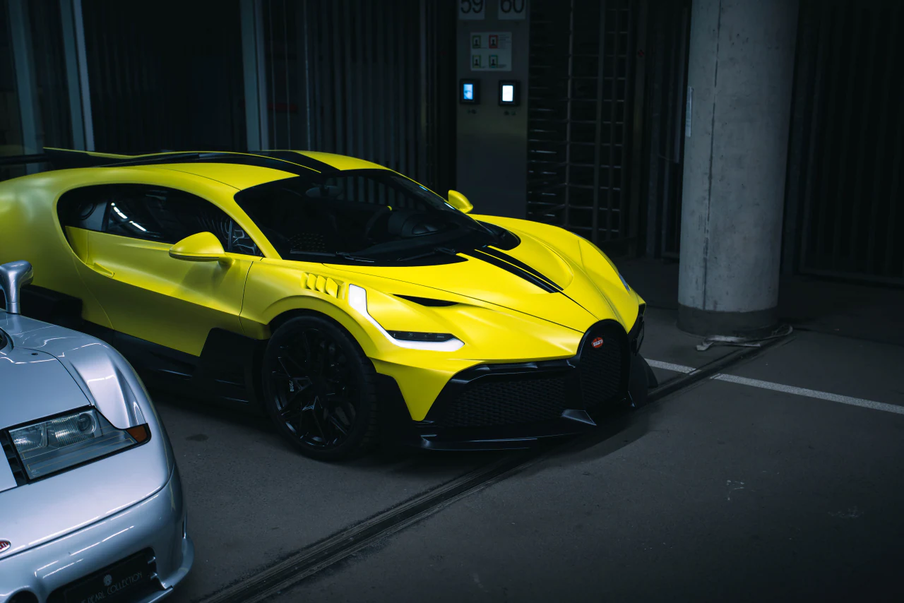
Ultrace 2025, Wrocław · 48 zdjęć
Otwórz album →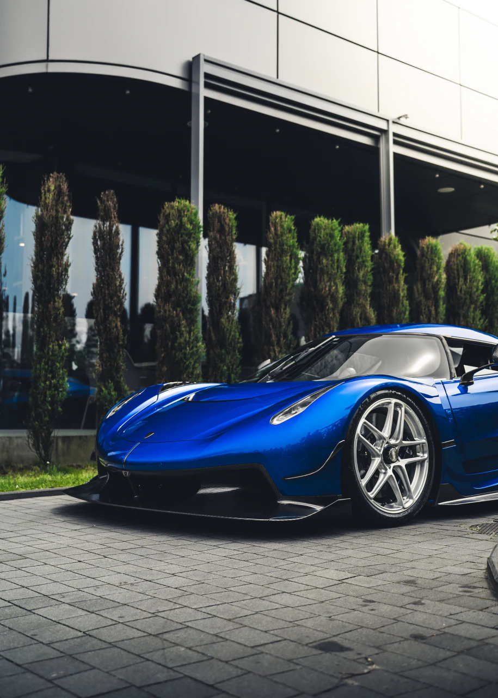
Katowice — La Squadra Foto Spot · 102 zdjęcia
Otwórz album →Jestem fotografem motoryzacyjnym z Rzeszowa. Fotografuję samochody na Podkarpaciu i w całej Polsce — od prywatnych sesji, przez zdjęcia aut na sprzedaż i współpracę z dealerami, po relacje z eventów takich jak Ultrace czy The ICE St. Moritz. W kadrze liczy się dla mnie charakter auta: światło, miejsce i detale.
Plener w okolicach Rzeszowa albo w miejscu, które pasuje do auta — pełne ujęcia, detale, wnętrze i zdjęcia w ruchu.
Kadry, które wyróżnią ogłoszenie: nadwozie, wnętrze i detale pokazane tak, jak auto wygląda naprawdę.
Sesje aut z oferty i realizacji po detailingu — w Rzeszowie, na Podkarpaciu i z dojazdem w całej Polsce.
Zloty, track daye i konkursy elegancji — w Polsce i w Europie.
Rzeszów · Podkarpacie · dojazd w całej Polsce i EuropieSzczegóły oferty →
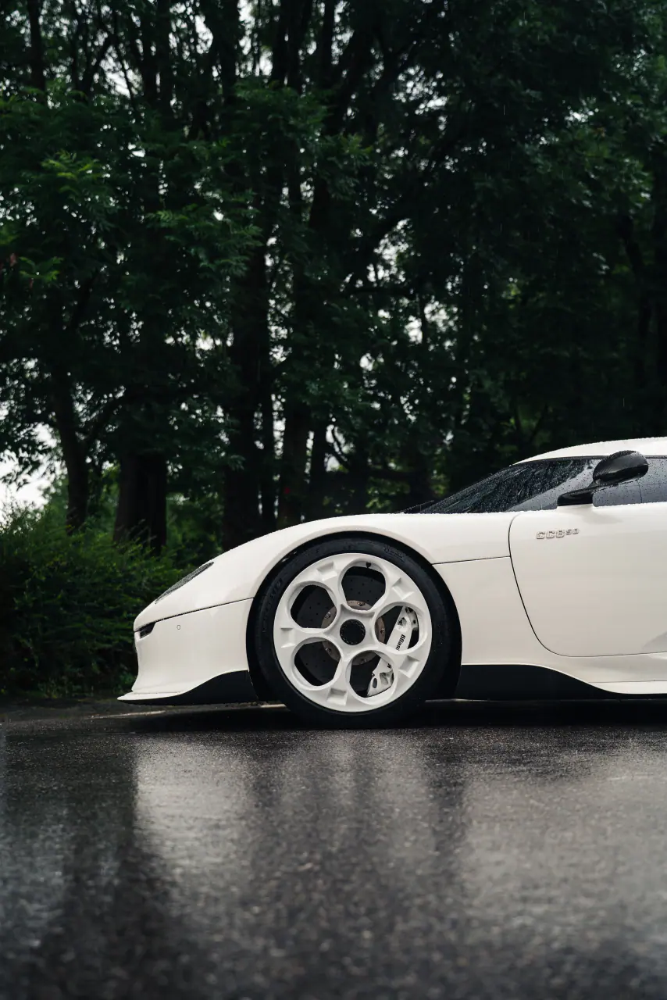
Cześć, jestem Arek. Mam 19 lat i od kilku lat moją największą pasją jest fotografia motoryzacyjna — choć aparat zabieram ze sobą nie tylko tam, gdzie są samochody.
Fotografuję nie tylko supercary — równie mocno kręcą mnie dobrze przemyślane, fajnie zrobione projekty. Na eventy takie jak Ultrace jeżdżę od 2019 roku, kiedy nazywał się jeszcze Raceism. Działam z Rzeszowa — na Podkarpaciu i w całej Polsce, a coraz częściej także na największych eventach w Europie, jak The ICE w St. Moritz czy weekend nad jeziorem Como.
Szukam kadrów, w których auto jest częścią większej historii: krajobrazu, atmosfery wydarzenia i ludzi wokół niego.

Co zrobić przed sesją, żeby zdjęcia Twojego auta wyglądały jak z katalogu — poradnik dla klientów z Podkarpacia i całej Polski.
Czytaj dalej →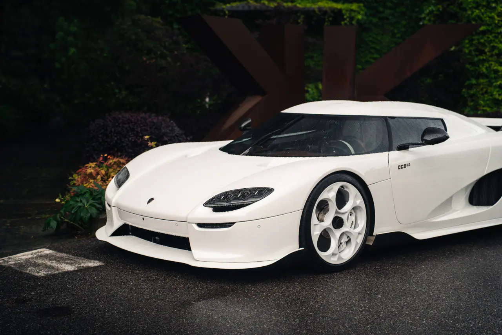
Alpejski dojazd, deszczowe poranki w willach nad wodą i jedne z najrzadszych aut świata w jednym miejscu.
Czytaj dalej →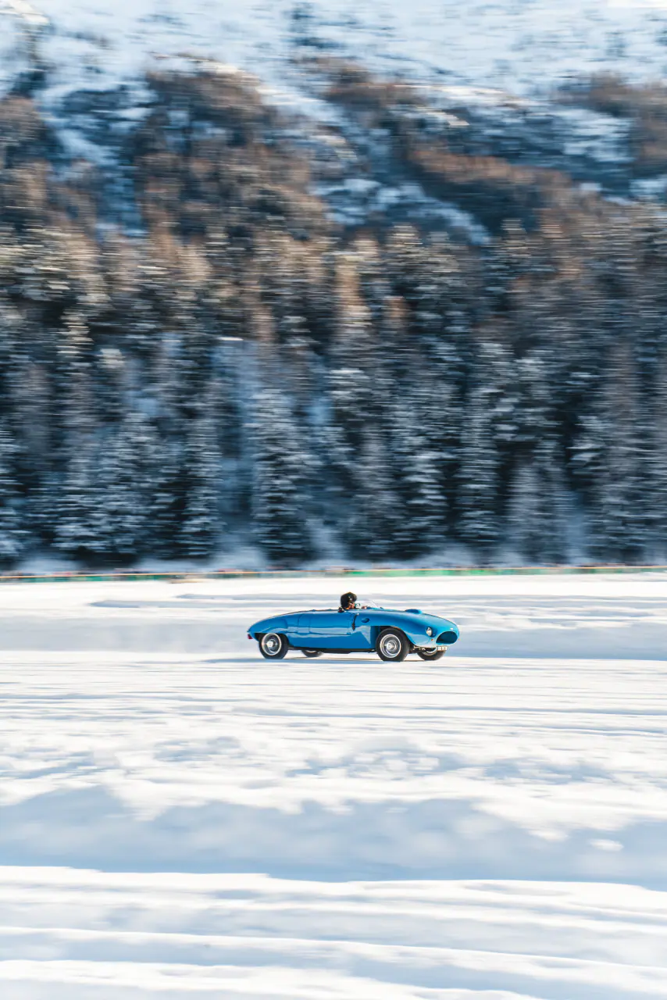
Trzy dni w St. Moritz: garaż pełen Pagani, panning na zamarzniętym jeziorze, McLaren F1 GTR i Koenigseggi na śniegu.
Czytaj dalej →Działam z Rzeszowa, więc najczęściej fotografuję w Rzeszowie i na Podkarpaciu. Dojeżdżam też w inne miejsca w Polsce, a na eventy — za granicę, jak The ICE w St. Moritz czy Supercar Owners Circle na Sardynii.
Każde, które ma charakter — supercary i hypercary, klasyki, dopracowane projekty tuningowe i auta na co dzień, którymi ktoś po prostu się cieszy.
Standardowa sesja trwa zwykle 1–3 godziny — zależy od liczby miejsc i tego, czy robimy zdjęcia w ruchu.
Cena zależy od rodzaju sesji, miejsca i zakresu zdjęć. Napisz kilka słów o aucie i celu zdjęć — odpowiem z wyceną i propozycją terminu.
Najważniejsze to umyte auto, czyste felgi i szyby oraz puste wnętrze. Wszystko krok po kroku opisałem w poradniku na blogu. Przeczytaj poradnik →
Tak — dla dealerów, komisów, studiów detailingu i organizatorów eventów. Napisz, czego potrzebujesz, a przygotuję propozycję współpracy.
Sesje prywatne, współprace z dealerami i relacje z eventów — Rzeszów, Podkarpacie, cała Polska i Europa. Napisz, odpowiem najszybciej jak to możliwe.
lub napisz bezpośrednio:
arek.carphotography@gmail.com